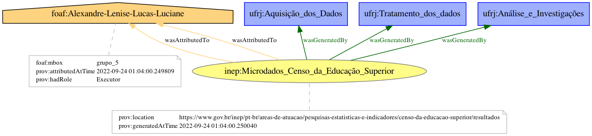

A proveniência dos dados é importante para agregar metadados sobre a origem, sua obtenção e mais informações sobre os dados, o que enriquece a pesquisa científica e a identificação da autoria (Buneman and Tan 2007). Para adicionar proveniência ao trabalho, utilizamos a biblioteca prov, que é a alternativa em Python para o modelo fornecido em (Missier, Belhajjame, and Cheney 2013). Sua instalação é feita como na célula abaixo.
pip install prov
Collecting prov
Downloading prov-2.0.0-py3-none-any.whl (421 kB)
|████████████████████████████████| 421 kB 3.5 MB/s eta 0:00:01
Requirement already satisfied: lxml>=3.3.5 in /Users/lenise.rodrigues/opt/anaconda3/lib/python3.9/site-packages (from prov) (4.8.0)
Collecting rdflib>=4.2.1
Downloading rdflib-6.2.0-py3-none-any.whl (500 kB)
|████████████████████████████████| 500 kB 26.5 MB/s eta 0:00:01
Requirement already satisfied: python-dateutil>=2.2 in /Users/lenise.rodrigues/opt/anaconda3/lib/python3.9/site-packages (from prov) (2.8.2)
Requirement already satisfied: networkx>=2.0 in /Users/lenise.rodrigues/opt/anaconda3/lib/python3.9/site-packages (from prov) (2.7.1)
Requirement already satisfied: six>=1.5 in /Users/lenise.rodrigues/opt/anaconda3/lib/python3.9/site-packages (from python-dateutil>=2.2->prov) (1.16.0)
Requirement already satisfied: setuptools in /Users/lenise.rodrigues/opt/anaconda3/lib/python3.9/site-packages (from rdflib>=4.2.1->prov) (61.2.0)
Requirement already satisfied: pyparsing in /Users/lenise.rodrigues/opt/anaconda3/lib/python3.9/site-packages (from rdflib>=4.2.1->prov) (3.0.4)
Collecting isodate
Downloading isodate-0.6.1-py2.py3-none-any.whl (41 kB)
|████████████████████████████████| 41 kB 2.0 MB/s eta 0:00:01
Installing collected packages: isodate, rdflib, prov
Successfully installed isodate-0.6.1 prov-2.0.0 rdflib-6.2.0
Note: you may need to restart the kernel to use updated packages.
Tendo a biblioteca instalada, é possível importar o necessário. Além disso, nessa primeira etapa, é inicializado o documento de proveniência.
Rode a célula abaixo sempre antes de escrever um novo grafo de proveniência, senão, vai pegar informações do grafo anteriormente gerado.
from prov.model import ProvDocument, PROVd = ProvDocument()
Para obter o grafo de proveniência como resultado, é necessário definir os agentes, as entidades e atividades, tal qual descrito abaixo:
Tendo isso, passamos para a construção do grafo de acordo com o que foi usado na pesquisa, definindo os prefixos, adicionando agentes, entidades e atividades, configurando geradores e fazendo as devidas atribuições.
import datetime# Instituto Nacional de Estudos e Pesquisas Educacionais Anísio Teixeira# Declaração dos namespaces para os prefixos do trabalhod.add_namespace('inep', 'https://www.gov.br/inep/pt-br/areas-de-atuacao/pesquisas-estatisticas-e-indicadores/censo-da-educacao-superior/resultados')d.add_namespace('ufrj', 'http://www.ufrj.br/ppgi/')d.add_namespace("foaf", "http://xmlns.com/foaf/0.1/")# Adição do agente do inep# e das entidades ligadas ao inep# e atribuições das execuçõesagent_inep = d.agent("inep:INEP")activity_inep = d.activity("inep:criar_dataset")e_inep = d.entity("inep:"+ entity_inep, {'prov:label': 'Representação das informações do censo da educação superior, com todos os anos juntos','prov:type': 'foaf:Document'})d.wasAssociatedWith(activity_inep, agent_inep)d.wasGeneratedBy(e_inep, activity_inep)# Adição das atividades da UFRJ ligadas às entidades do INEPactivity_download = d.activity("ufrj:"+ activity)d.wasAssociatedWith(activity_download, agent_GRUPO)activity_extracao = d.activity("ufrj:"+ activity_1)d.wasAssociatedWith(activity_extracao, agent_GRUPO)activity_agregacao = d.activity("ufrj:"+ activity_2)d.wasAssociatedWith(activity_agregacao, agent_GRUPO)activity_data_dict = d.activity("ufrj:"+ activity_3)d.wasAssociatedWith(activity_data_dict, agent_GRUPO)d.used(activity_download, e_inep)for i inrange(0, 10): e = d.entity("inep:"+ entities_inep_zip[i], {'prov:label': f'ZIP com as informações do censo da educação superior do ano {i}','prov:type': 'foaf:Document'}) e2 = d.entity("inep:"+ data_dict_inep_xlsx[i], {'prov:label': f'xlsx com o dicionário de dados do censo da educação superior do ano {i}','prov:type': 'foaf:Document'}) e3 = d.entity("inep:"+ entities_inep_csv[i], {'prov:label': f'CSV com o dataset do censo da educação superior do ano {i}','prov:type': 'foaf:Document'}) d.wasDerivedFrom(e, e_inep) d.wasDerivedFrom(e2, e) d.wasDerivedFrom(e3, e) d.used(activity_extracao, e) d.used(activity_data_dict, e2) d.used(activity_agregacao, e3)# Definição e associação do dataset agregadoentity_agregado = d.entity("ufrj:"+ entity_1, {'prov:label': f'Dataset com a agregação de todos os dados do censo da educação superior de todos os anos','prov:type': 'foaf:Document', 'prov:generatedAtTime': str(datetime.datetime.utcnow())})d.wasGeneratedBy(entity_agregado, activity_extracao)# Adição dos agentes da UFRJ com históricoagent_UFRJ = d.agent("ufrj:"+ agent_ufrj, {'prov:label': PROV["Organization"],"foaf:name": 'Universidade Federal do Rio de Janeiro','prov:generatedAtTime': str(datetime.datetime.utcnow())})agent_PPGI = d.agent("ufrj:"+ agent_ppgi, {'prov:label': PROV["Organization"],'foaf:name': 'Programa de Pós Graduação em Informática','prov:generatedAtTime': str(datetime.datetime.utcnow())})d.actedOnBehalfOf(agent_PPGI, agent_UFRJ)agent_DISCIPLINA = d.agent("ufrj:"+ agent_disciplina, {'prov:label': PROV["Organization"],'foaf:name': 'Disciplina Fundamentos de Ciências de Dados','prov:generatedAtTime': str(datetime.datetime.utcnow())})d.actedOnBehalfOf(agent_DISCIPLINA, agent_PPGI)agent_GRUPO = d.agent("ufrj:"+ agent_grupo, {'prov:label': PROV["Organization"],'foaf:name': 'Grupo 5 - Trabalho Final','prov:generatedAtTime': str(datetime.datetime.utcnow())})d.actedOnBehalfOf(agent_GRUPO, agent_DISCIPLINA)agent_CODIGO = d.agent("ufrj:"+ agent_codigo, {'prov:label': 'Código utilizado no trabalho','prov:type': PROV["SoftwareAgent"],'prov:generatedAtTime': str(datetime.datetime.utcnow())})d.actedOnBehalfOf(agent_CODIGO, agent_GRUPO)for agent, name in agents_integrantes_grupo.items(): a ="ufrj:"+ agent d.agent(a, {'prov:label': PROV["Person"],'foaf:name': name,'prov:generatedAtTime': str(datetime.datetime.utcnow())}) d.actedOnBehalfOf(a, agent_GRUPO)# Definição e associação do dataset filtradoentity_filtrado = d.entity("ufrj:"+ entity_1, {'prov:label': f'Dataset com os dados do censo da educação superior agregados filtrados, renomeados e tratados','prov:type': 'foaf:Document', 'prov:generatedAtTime': str(datetime.datetime.utcnow())})activity_filtrar = d.activity("ufrj:"+ activity_4)d.wasGeneratedBy(entity_filtrado, activity_filtrar)d.wasAssociatedWith(activity_filtrar, agent_GRUPO)activity_renomear = d.activity("ufrj:"+ activity_5)d.wasGeneratedBy(entity_filtrado, activity_renomear)d.wasAssociatedWith(activity_renomear, agent_GRUPO)activity_tratar = d.activity("ufrj:"+ activity_6)d.wasGeneratedBy(entity_filtrado, activity_tratar)d.wasAssociatedWith(activity_tratar, agent_GRUPO)activity_analise = d.activity("ufrj:"+ activity_7)d.used(activity_agregacao, entity_filtrado)d.wasAssociatedWith(activity_analise, agent_GRUPO)activity_histograma = d.activity("ufrj:"+ activity_8)d.used(activity_agregacao, entity_filtrado)d.wasAssociatedWith(activity_histograma, agent_GRUPO)activity_features = d.activity("ufrj:"+ activity_9)d.used(activity_agregacao, entity_filtrado)d.wasAssociatedWith(activity_features, agent_GRUPO)
Requirement already satisfied: ipython in /Users/lenise.rodrigues/opt/anaconda3/lib/python3.9/site-packages (8.2.0)
Requirement already satisfied: prompt-toolkit!=3.0.0,!=3.0.1,<3.1.0,>=2.0.0 in /Users/lenise.rodrigues/opt/anaconda3/lib/python3.9/site-packages (from ipython) (3.0.20)
Requirement already satisfied: matplotlib-inline in /Users/lenise.rodrigues/opt/anaconda3/lib/python3.9/site-packages (from ipython) (0.1.2)
Requirement already satisfied: stack-data in /Users/lenise.rodrigues/opt/anaconda3/lib/python3.9/site-packages (from ipython) (0.2.0)
Requirement already satisfied: pexpect>4.3 in /Users/lenise.rodrigues/opt/anaconda3/lib/python3.9/site-packages (from ipython) (4.8.0)
Requirement already satisfied: appnope in /Users/lenise.rodrigues/opt/anaconda3/lib/python3.9/site-packages (from ipython) (0.1.2)
Requirement already satisfied: traitlets>=5 in /Users/lenise.rodrigues/opt/anaconda3/lib/python3.9/site-packages (from ipython) (5.1.1)
Requirement already satisfied: decorator in /Users/lenise.rodrigues/opt/anaconda3/lib/python3.9/site-packages (from ipython) (5.1.1)
Requirement already satisfied: jedi>=0.16 in /Users/lenise.rodrigues/opt/anaconda3/lib/python3.9/site-packages (from ipython) (0.18.1)
Requirement already satisfied: pickleshare in /Users/lenise.rodrigues/opt/anaconda3/lib/python3.9/site-packages (from ipython) (0.7.5)
Requirement already satisfied: setuptools>=18.5 in /Users/lenise.rodrigues/opt/anaconda3/lib/python3.9/site-packages (from ipython) (61.2.0)
Requirement already satisfied: backcall in /Users/lenise.rodrigues/opt/anaconda3/lib/python3.9/site-packages (from ipython) (0.2.0)
Requirement already satisfied: pygments>=2.4.0 in /Users/lenise.rodrigues/opt/anaconda3/lib/python3.9/site-packages (from ipython) (2.11.2)
Requirement already satisfied: parso<0.9.0,>=0.8.0 in /Users/lenise.rodrigues/opt/anaconda3/lib/python3.9/site-packages (from jedi>=0.16->ipython) (0.8.3)
Requirement already satisfied: ptyprocess>=0.5 in /Users/lenise.rodrigues/opt/anaconda3/lib/python3.9/site-packages (from pexpect>4.3->ipython) (0.7.0)
Requirement already satisfied: wcwidth in /Users/lenise.rodrigues/opt/anaconda3/lib/python3.9/site-packages (from prompt-toolkit!=3.0.0,!=3.0.1,<3.1.0,>=2.0.0->ipython) (0.2.5)
Requirement already satisfied: pure-eval in /Users/lenise.rodrigues/opt/anaconda3/lib/python3.9/site-packages (from stack-data->ipython) (0.2.2)
Requirement already satisfied: executing in /Users/lenise.rodrigues/opt/anaconda3/lib/python3.9/site-packages (from stack-data->ipython) (0.8.3)
Requirement already satisfied: asttokens in /Users/lenise.rodrigues/opt/anaconda3/lib/python3.9/site-packages (from stack-data->ipython) (2.0.5)
Requirement already satisfied: six in /Users/lenise.rodrigues/opt/anaconda3/lib/python3.9/site-packages (from asttokens->stack-data->ipython) (1.16.0)
!pip install pydot
Requirement already satisfied: pydot in /Users/lenise.rodrigues/opt/anaconda3/lib/python3.9/site-packages (1.4.2)
Requirement already satisfied: pyparsing>=2.1.4 in /Users/lenise.rodrigues/opt/anaconda3/lib/python3.9/site-packages (from pydot) (3.0.4)
Para visualização gráfica e geração do output em XML, foram necessárias as instalações das bibliotecas acima, além do seguinte comando no terminal(válido para mac os): brew install gprof2dot
Ainda é possível essa preparação para visualização gráfica usando o seguinte, conforme disponível no material dos professores Sérgio Serra e Jorge Zavaleta: conda install -c anaconda pydot conda install -c anaconda graphviz
Agora, com toda a preparação, é possível gerar o grafo e também um meio de visualizar.
# Criando pasta para armazenar os outputsimport osprovenance_output_dir ="../provenance_data/"os.makedirs(os.path.dirname(provenance_output_dir), exist_ok=True)from prov.dot import prov_to_dot# Generação do Grafo de Proveniênciadot = prov_to_dot(d)graph_png = graph +".png"dot.write_png(provenance_output_dir + graph_png)# Generação do Output em XMLoutput_name = provenance_output_dir +"microdados_censo_educacao_superior_new.xml"d.serialize(output_name, format='xml')# Visualização do Grafo de Proveniênciafrom IPython.display import ImageImage(provenance_output_dir + graph_png)

References
Buneman, Peter, and Wang-Chiew Tan. 2007. “Provenance in Databases.” In Proceedings of the 2007 ACM SIGMOD International Conference on Management of Data, 1171–73.
Missier, Paolo, Khalid Belhajjame, and James Cheney. 2013. “The W3C PROV Family of Specifications for Modelling Provenance Metadata.” In Proceedings of the 16th International Conference on Extending Database Technology, 773–76.